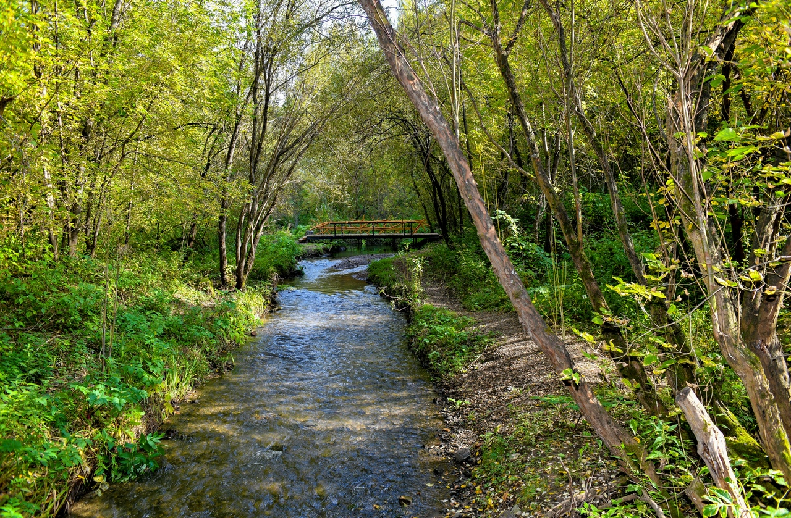

2. Долина Егошихи и Разгуляй
Исторический район Разгуляй, долина реки Егошихи · Найти на Яндекс Картах

История места
Строительство Егошихинского медеплавильного завода началось в мае 1723 года и завершилось в январе 1724 года. Работы возглавлял Вильгельм де Геннин, продолживший подготовку, начатую Татищевым.
Для производства построили плотину, плавильные печи, рудные и угольные склады. Долина была узкой, поэтому жилые постройки размещались на верхней террасе берега — на территории современного Разгуляя. Сам завод не сохранился: остановка посвящена месту его существования и окружающему ландшафту.
Значение для Перми и России
Здесь можно объяснить, как выбор природных условий для предприятия привёл к возникновению города. Заводское поселение стало основой Перми, а его история — частью истории промышленного Урала.